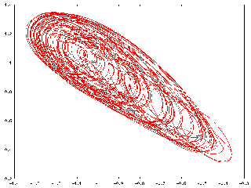
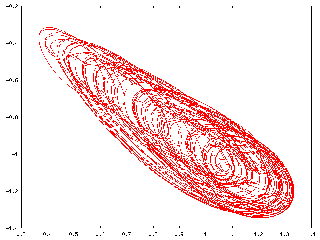
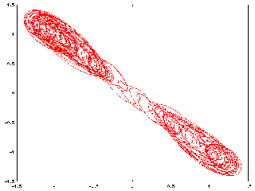
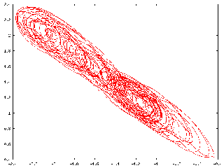
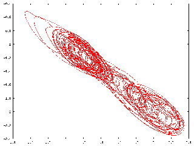
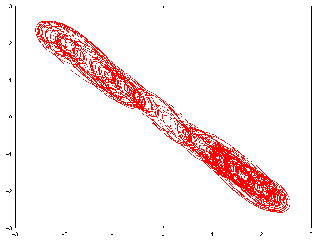
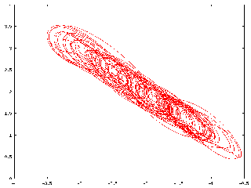
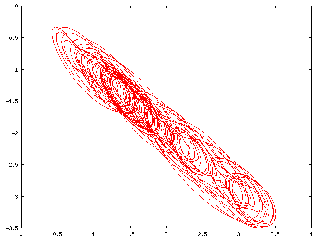
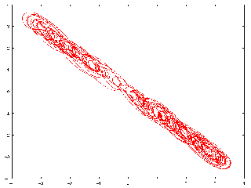

See also a Gallery of multispiral
Strange Attractors in the modified
Chua's dynamical system
See also a Gallery of multispiral
Strange Attractors in the modified
Chua's dynamical system
Ref ,
in the Int. Journ. of Bifurcation and Chaos 9(6), 1009-1039, (1999), (IJBC).
See also a Gallery of multispiral
Strange Attractors in the modified
Chua's dynamical system
See also some multispiral
Strange Attractors in some
nonautonomous dynamical system
See also some multispiral
Strange Attractors in some
Brocket type system
See also some multi-buckle
Strange Attractors in some
Van der pol type system
Kapitaniak [1997] studied the following quasi-periodically forced system which was first proposed by Reich [1961]:
{dx}/{dt} = y-f_2(x), {dy}/{dt} = -beta[x+(v+1)y)+A(sin(omega_1 . t) + sin(\omega_2 . t)],
where x and y are functions of t, f_2 is the Chua's nonlinearity and, beta, A, v, omega_1 and omega_2 are the parameters of the system. In the ref. given above, I modified f_2 to get some new multispiral strange attractors:
|
 left-1-spiral strange attractor exhibited by the modified Reich-Kapitaniak's system |
 right-1-spiral strange attractor exhibited by the modified Reich-Kapitaniak's system |
 Combination of these previous attractors with the formation of a double-one-spiral chaotic attractor. |
|
 left-2-spiral strange attractor exhibited by the modified Reich-Kapitaniak's system |
 right-2-spiral strange attractor exhibited by the modified Reich-Kapitaniak's system |
 Combination of these previous attractors with the formation of a double-two-spiral chaotic attractor. |
|
 left-3-spiral strange attractor exhibited by the modified Reich-Kapitaniak's system |
 right-3-spiral strange attractor exhibited by the modified Reich-Kapitaniak's system |
 Combination of these previous attractors with the formation of a double-three-spiral chaotic attractor. |
Aziz Alaoui's home page